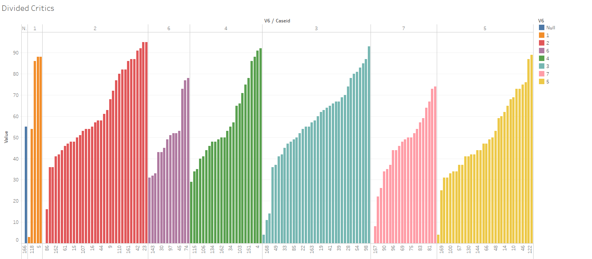
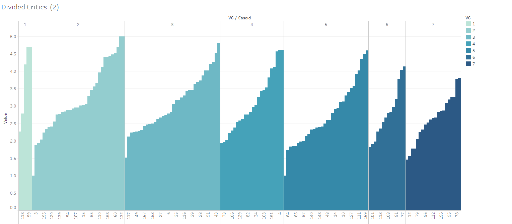

Graph 1
User Testing
{kind=link}
Graph 2
{kind=link}
We tested our initial versions of visualization with a few users. These two versions were visualization of artists ranking from critics of different level of experience. Here are a few feedbacks we got that guided our iterations going forward:
- 1. I don’t know what the color means.
- 2. I can see that there’re are some variance within the same level. But other than that I don’t see much information.
- 3. From the blue graph, I feel like artists are generally rated pretty highly.
From the user tests, we see problems with our visualization as following:
- 1. Color in the first graph was redundant. Dividing the groups in color did not give more information, but distracted users from core information.
- 2. Individual score within each group was not as meaningful. Instead, we should make another version of visualization that allows users to see variation across groups.
- 3. Artist scores were positive for all artists, which results in a weak comparison between good and bad scores. It also created a sentiment that all artists were rated positively. These perceptions were slightly off from what the data actually was. We brought in negative numbers here and remapped the scores, hoping that comparison between negative and positive scores would be strong enough.